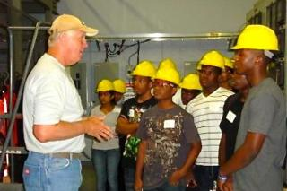

Colleges, universities, utilities, and manufacturers are working together to create new training, development, and enhancement programs in schools and businesses across the country. New technologies are emerging to improve the nation’s electric grid, and the sector workforce must reflect the increased skills and knowledge to install, monitor, and maintain the infrastructure. Supported by DOE Recovery Act funding, these programs help train the next generation of workers and ensure that the evolving technical challenges of the sector are met.
Through the “Light Up Your Future” program, the Council for Adult & Experiential Learning partnered with Northeast Utilities so a group of high school students from the Academy of Engineering and Green Technology in Hartford, Connecticut could get an up-close look at the daily life of utility workers. The 4-week internship provided students with a hands-on experience of what the electric utility industry looks like today and how it is changing as new smart grid technology is being deployed. Participants shadowed workers, interacted with line workers and other utility staff, climbed utility poles, operated some of the heavy equipment, and met with the president of Yankee Gas. Student response to the program was enthusiastic, and many wrote to thank the company and organizers for the experience.
Letters from Student Participants
Hello, I would like to thank everyone for giving me a wonderful opportunity to get a better experience of a variety of fields. This really meant a lot to me and I look forward to starting a career there. I learned many things during the four weeks. The best thing I learned was how to operate the machines. Yes, I had to get up at 5 AM each day to walk to Hartford High but I wanted to show that I was really serious about getting as much as I can take in. Through my experience I want to change for the better next school year. Last year I had mixed grades but still could have done better. My attendance was average but that’s not good enough. I don’t want to live an average life, words spoken from Ms. Walker. This makes me eager to get straight A+. The fields involved math and science, so this inspires me to do better. I feel kind of like a new person after this, and it makes me want to do great! Once again thanks for everything.
Michael Ashley
Thank you for these great opportunities for our school and future students. I learned how transformers, cranes, diggers, and backhoes work. Another thing, I learned math is very important for a company like NU. This school year I will do things differently like be on time to school, put more effort in every class, and pay more attention in every class. What surprised me was there was more hand-on work for NU. Four weeks made me think that I can do anything if I put my mind to it.
Carlos Lopez
Dear Northeast Utilities:
I want to thank you for this program that you have provided for us. This program really meant a lot to me. I realize what it takes to become a lineman and the responsiblities you must have. During my 4 weeks I learned a lot. For example the big transformer that sits on the side of the street I now know what it contains. This program changed everything about electricity when I think about it. I have made a new decision on my career choices based on my experience at North East Utilites. This year I will focus on school more, especially on math because it’s a very important subject and the duty of a lineman. Thank you for your time.
Bien-Amie Sanon
Dear Northeast Utilities,
I want to thank you for this program and for everything you did for me and for helping me. This program really meant a lot to me. I realize this program taught me a lot a stuff that could help me in life, for example how to take responsibility to do something for yourself . During my 4 weeks I learned a lot, for example how to work in a team, leadership, teamwork and I also learned a lot a stuff about electricity like Call Before you Dig, and I also learned a lot a stuff about gas. This program also make think another way about my future because I never had plans after high school. Because I went to this program now I want to be a lineman. This program also makes me think a different way for school because I want be a linemen so I’m going to work harder this school year especially in math because I know linemen use math to solve problems about electricity. I also want to thank all my trainers. They took the time with us, they didn’t treat us like students, they treated us like we were their kids. Thank you for this wonderful experiences.
Sincerely,
Farrias Sanon
 Dear Tom Burns and everyone at N.U. Light & Power Company and Yankee Gas,
Dear Tom Burns and everyone at N.U. Light & Power Company and Yankee Gas,
I wanted to tell you I had a great experience and learned a lot from electricity to gas from how to climb poles to operating heavy machinery. The time I spent at N.U. could not have been spent any better. I got to meet successful employees and learn from what they did to how they got where they are. I feel like this helped me a lot and has given me a boost towards my success and what I wish to have a career in now that I see how much is offered. I want to let everyone know I am grateful for the time and opportunity to experience such a big part of how our light and gas truly work. Before this I could say that I knew nothing as to how our light and gas all worked. Now I’m reading meters, knowing what’s under the ground when walking over painted pavement, and the best part is I know how to operate a crane, back-hoe, and lift, and of course safety comes first. This was great. Now I believe I do have a successful opportunity to succeed and will study hard in math and science. I’m sorry our time was so short. I would have loved to stay longer and learn more. Everything was worth it including waking up early and arriving on time. I would do it all over again if I could. Again, thank you for everything and your time. This experience will certainly make a difference on my resume so thanks.
Thank You,
Ramon Torres
Dear Tom,
Thank you for giving me the opportunity to work at the Northeast Utilities. I learned a lot for the past 4 weeks I have been there. I feel like I have a better understanding of what I learned and I also want to thank the instructors for their time and eagerness in training us. This internship made me think of ways that I can pursue my career. I have enjoyed working for you and I appreciate having had this wonderful opportunity to work with you all.
Again thank you so much. I sincerely appreciate your generosity.
Yours Sincerely,
Hafsa Abdirizak
Dear NU:
I would like to thank you for allowing me to attend this program that has changed my perspective of how I see my future and now it has given me a new goal in my life. I learned a lot from the Northeast Utilities internship. At first I thought it was going to be really boring just sitting on a desk doing paper work all day and not a lot of hands on. But as the week moved on I learned a lot of rules and safety procedures that I’d never heard of. Then I met great people like the president of Yankee Gas and the instructors for linemen. It was fun. I learned that math is more important than what I thought. In my second week in the internship I still didn’t get much hands on but the third week was when I was taught to use the folk lift and bob cat and other machines as well. I had a great experience and I strongly suggest this program for anyone who is interested in not just the money, but to be part of a great company and great learning experience.
Brian Viloria
Dear Tom Burns,
Thank you for giving me the opportunity to work for you, it was an amazing experience and I had an amazing time. I learned so many different things, and I never knew how much math and science was involved in the job. This summer internship made me realize that this is the career I want and I hope to see you guys soon.
Sincerely,
Shaquille Miller
Dear Tom,
I want to take this chance to thank you for the great opportunity you offered me and I had so much fun when I was working at the Northeast Utilities. I also think I learned many things over the four weeks I had been there. I also thank the instructors for giving up their time in helping us. I feel like I have better understanding of what I have learned.
Again Thanks a lot and I appreciate your generosity.
Yours faithfully,
Sita Mishra